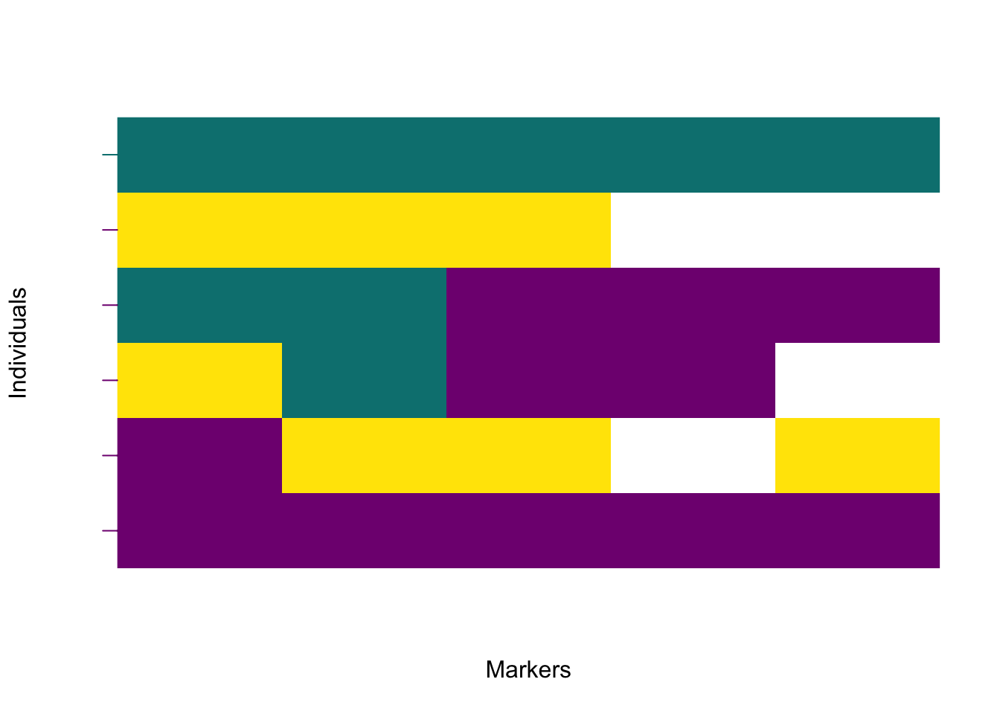

Chapter 5 Frequently asked questions
- How can I install
diemrfrom the source?
Make sure to set the R working directory to the folder, where the package tarball is stored,
or include a full path to the file within the quotes. Update the version number to the specific
file.
- How can I calculate the hybrid indices from my polarised data?
There are two options. First, use diem with argument verbose = TRUE and hybrid indices
will be stored in a text file in the diagnostics folder in the working directory. The stored
values will not be ploidy-aware. Additionally, these hybrid indices are blind to the
diagnostic index of the markers. Hybrid indices should be calculated only on the most
diagnostic markers. To calculate the hybrid
indices without the small data correction use the I4 matrix in the diem output (See
FAQ on Hybrid indices below on how to first filter markers based on their diagnosticity).
apply(res$I4, MARGIN = 1, FUN = pHetErrOnStateCount)
# [,1] [,2] [,3] [,4] [,5] [,6]
# p 0.5000000 0 0.3333333 0.5000000 0.8333333 1.0000000
# Het 0.3333333 0 0.6666667 0.3333333 0.3333333 0.0000000
# Err 0.0000000 0 0.0000000 0.0000000 0.0000000 0.3333333To calculate the hybrid indices while ignoring uninformative sites (which will force all
hybrid indices towards 0.5), filter the importPolarised data by the DI of each site.
- I expect more than two groups of samples in my data. Can I use
diemr?
Yes. Multiple barriers to geneflow between multiple groups of samples can be identified iteratively
with help from the argument ChosenInds. For example, let’s assume that the individual 2 was
identified as belonging to one side of the barrier and being separated from other by the steepest
change in the hybrid index. In the next diem run, we exclude the individual 2.
samples2 <- c(1, 3:6)
CheckDiemFormat(files = filepaths,
ChosenInds = samples2,
ploidy = ploidies)
# File check passed: TRUE
# Ploidy check passed: TRUE
res2 <- diem(files = filepaths,
ChosenInds = samples2,
ploidy = ploidies,
nCores = 1,
markerPolarity = list(c(FALSE, FALSE, TRUE)))
# calculate hybrid indices from updated I4
h.res2 <- apply(res2$I4,
MARGIN = 1,
FUN = pHetErrOnStateCount)[1, ]
# set names for the hybrid index values
h.res2 <- setNames(h.res2, nm = samples2)
# 1 3 4 5 6
# 0.50 0.33 0.50 0.83 1.00
# calculate the center of the maximum hybrid index change
diffs <- data.frame(rollmean = zoo::rollmean(sort(h.res2), k = 2),
diff = diff(sort(h.res2), lag = 1))
h.res2.c <- diffs$rollmean[which.max(diffs$diff)]
# [1] 0.6666667Since the center of the barrier is at 0.67 now, diem separated individuals 1, 3, and 4
from a group that includes 5, 6. Combined with the result from the first diem run, we
have identified three groups in the dataset: (2), (1, 3, 4), and (5, 6).
- The hybrid indices in my dataset are too similar. I expected them to look more like the rescaled hybrid indices. What is wrong?
The input data probably contains invariant sites. These cannot be polarised, and so will
keep their initial random polarisation, making all hybrid indices tend to 0.5. A filter
removing all invariant sites before analysis will speed up analysis, but it will not
eliminate the problem because (1) sequencing errors will make invariant sites appear
variant, or (2) variant sites can have variation irrelevant to a diem barrier.
We recommend you filter sites by diagnostic index (DI) after the diem analysis to
recalculate hybrid indices (and plot genotypes) with only the most diagnostic markers.
# Select 40% of markers with the highest diagnostic index
threshold <- quantile(res2$DI$DI, prob = 0.6)
genotypes3 <- genotypes2[, res2$DI$DI > threshold]
# Recalculate I4 and hybrid indices
h3 <- apply(genotypes3,
MARGIN = 1,
FUN = \(x) pHetErrOnStateCount(sStateCount(x)))[1, ]
# Plot the polarised markers
plotPolarized(genotypes3, h3)
- How to cite
diemr?
To use diemr in a publication, please cite (Baird et al. 2023).